Work / IBM × Riyadh Air
 IBM × Riyadh Air · 2023–24 · Foundations, Components, Localisation
IBM × Riyadh Air · 2023–24 · Foundations, Components, LocalisationA design system for an airline that started from zero
Riyadh Air is Saudi Arabia's new national carrier, built digital-first with no legacy systems behind it. It needed five to six web apps and two to three mobile apps at once, in English and Arabic. At IBM, the team first ran a pilot to prove a shared system would speed teams up. Then, with Publicis Sapient, built that system from scratch in Figma: the styles, a naming grammar and 71 components every team built from.

The 30-second version
The problem
A new airline with a brand and a launch date, but no apps. Eight or more apps designed at once, by large teams, in two scripts that read in opposite directions.
What we did
A pilot on one IBM project first. It sped the team up, so the full library followed: styles, structure, a shared vocabulary and 71 components.
What changed
Product, design and engineering adopted it, IBM engineers built it in code, and the apps launched with the airline in October 2025.
- 71
- components in 13 families
- 4
- versions of each: EN and AR, light and dark
- 6
- breakpoints, from a 184px watch to 1920px
- 8+
- web and mobile apps from one library
An airline with no past to inherit
Most airlines carry decades of booking engines, loyalty platforms and check-in kiosks. Riyadh Air started with none of it. Every screen a guest would touch, from booking to boarding, had to be designed and built for the first time.
Riyadh Air
Product owners, brand and engineering, standing up an airline and its digital estate together.
IBM
The lead digital partner. The design team proposed the system and built it; IBM engineers turned it into code.
Publicis Sapient
The partner on the design system, shaping and reviewing the library with us.
Founded in 2023 by the Public Investment Fund, with 100+ destinations planned by 2030. First flight: Riyadh to London Heathrow, October 2025.
Many apps, many teams, one launch date
Booking, check-in, loyalty and the trip itself, across web, phone and watch, all at once. With large teams working in parallel, each app would drift into its own version of the brand unless something held them together.
Scale
Five to six web apps and two to three mobile apps, each with its own team, all designed at the same time.
Speed
The first flights set the date. Rebuilding the same button in every app was time no team could spare.
Language
English and Arabic: left to right and right to left, with different line heights.
Brand
The lavender identity was brand new. Product UI needs far more than a logo, a palette and a pattern.
Read the detail
The design question: how might we give every team, on every device and in both languages, one way to build Riyadh Air, before there was a Riyadh Air to copy?
Prove it on one project first
A design system is a big ask of a client building everything else at the same time. So rather than pitch it on a slide, the team ran a small system on one IBM project and let the results make the case. Step through it.
Step 1 of 4
Propose
A shared system to speed up delivery across a large estate, pitched as a small experiment rather than a slide.
- Who
- IBM design team
- When
- Before the system
- What comes out
- A pilot agreed
Step 2 of 4
Pilot
One project team builds real screens with an early library.
- Who
- One IBM project team
- When
- A few sprints
- What comes out
- Real work, built on the library
Step 3 of 4
Measure
Is it faster? Is it consistent? Do the teams want it?
- Who
- IBM design and the other teams
- When
- End of the pilot
- What comes out
- A clear efficiency gain, and teams asking for it
Step 4 of 4
Scale
A full design system for Riyadh Air's web and mobile apps.
- Who
- IBM with Publicis Sapient
- When
- 2023–24
- What comes out
- 71 components every team builds from
Turning a lavender brand into product UI
The identity is built on lavender, a nod to the lavender that covers the Kingdom in spring, with deep indigo and a sunset peach beside it. A brand like this is made for liveries and billboards; the job was to turn it into something a seat map, a price and an error message could be built from.
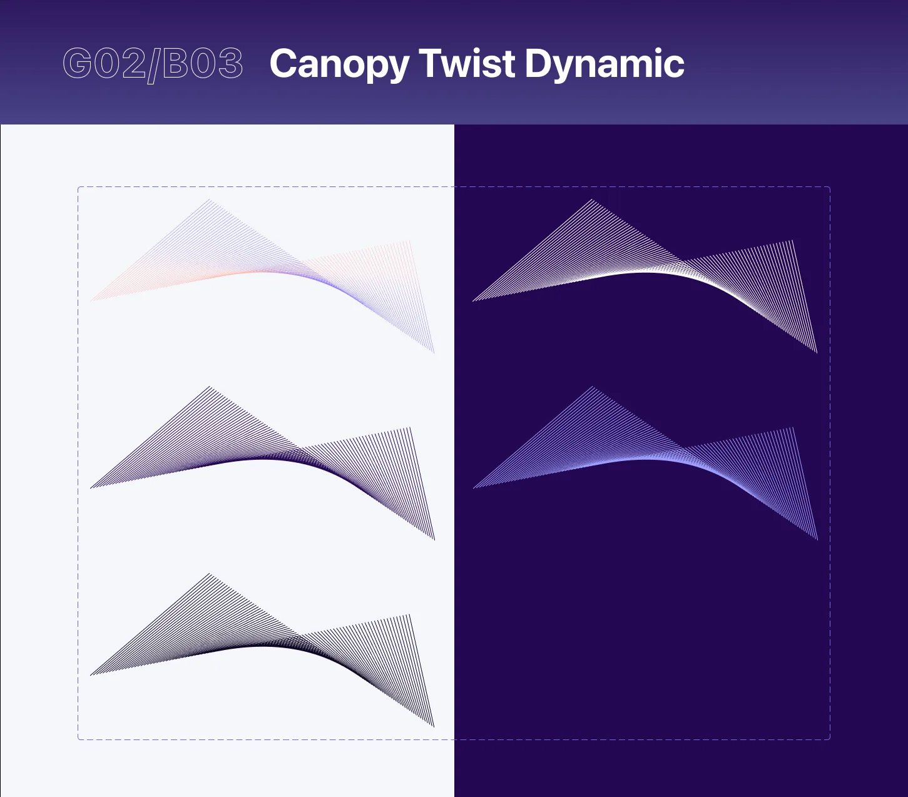
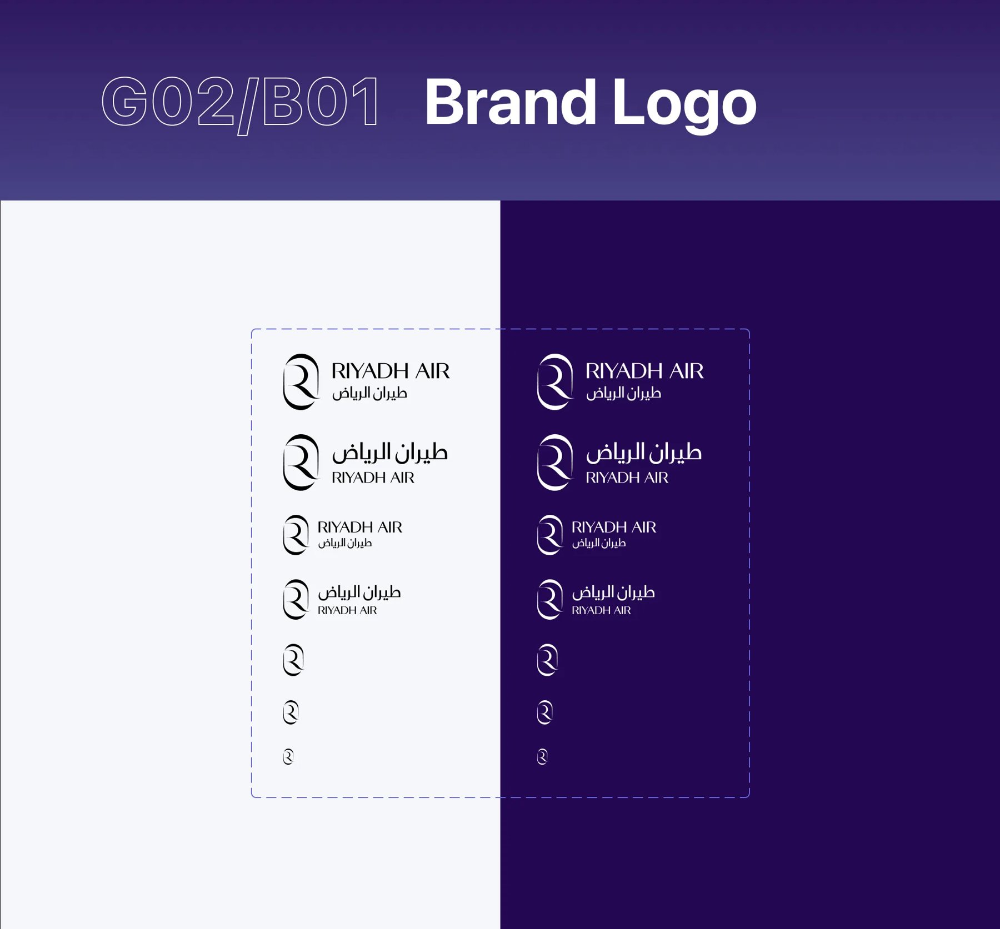
The styles every component is built from
Before a single button, the library opened with its styles. Every component uses only these, so a change here travels through all 71 of them.
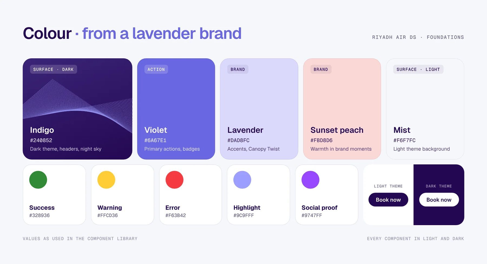
Colour
Indigo for the dark theme and mist for the light carry every screen. Violet does the work of actions and badges, lavender and peach stay for brand moments, and a small set of status colours works in both themes.
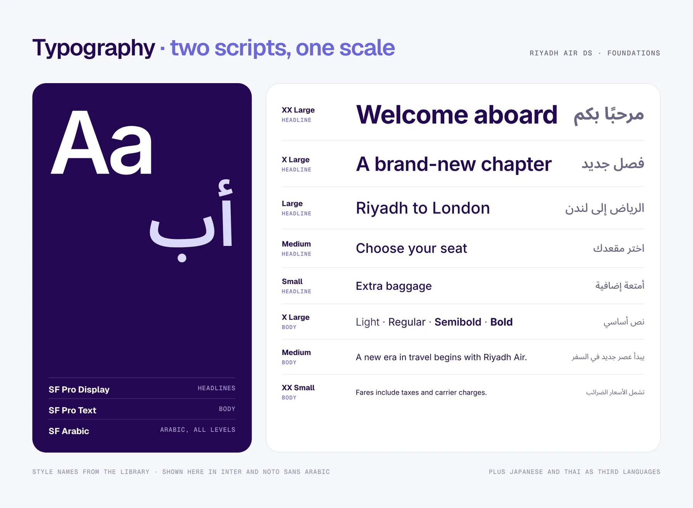
Typography: two scripts, one scale
SF Pro Display and SF Pro Text, paired with SF Arabic at every level. Each style was drawn twice, with Arabic at its own size and a taller line height. Japanese and Thai were set as third languages for routes to come.
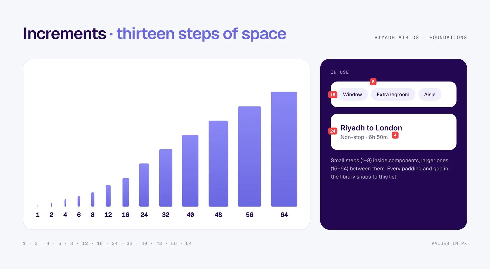
Increments: thirteen steps of space
1, 2, 4, 6 and 8 for the inside of a component, then 12 up to 64 between them. Designers stopped nudging by eye, and developers mapped the list straight to spacing tokens.
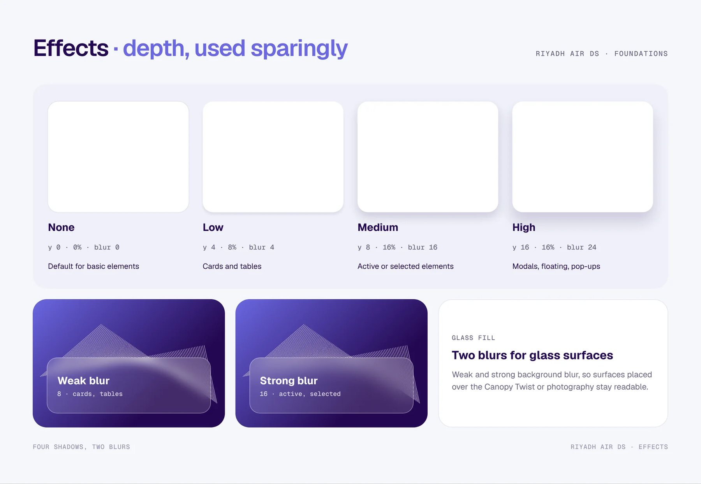
Effects: depth, used sparingly
Four shadows, each with a job, and two background blurs so glass surfaces can sit over the Canopy Twist and photography.
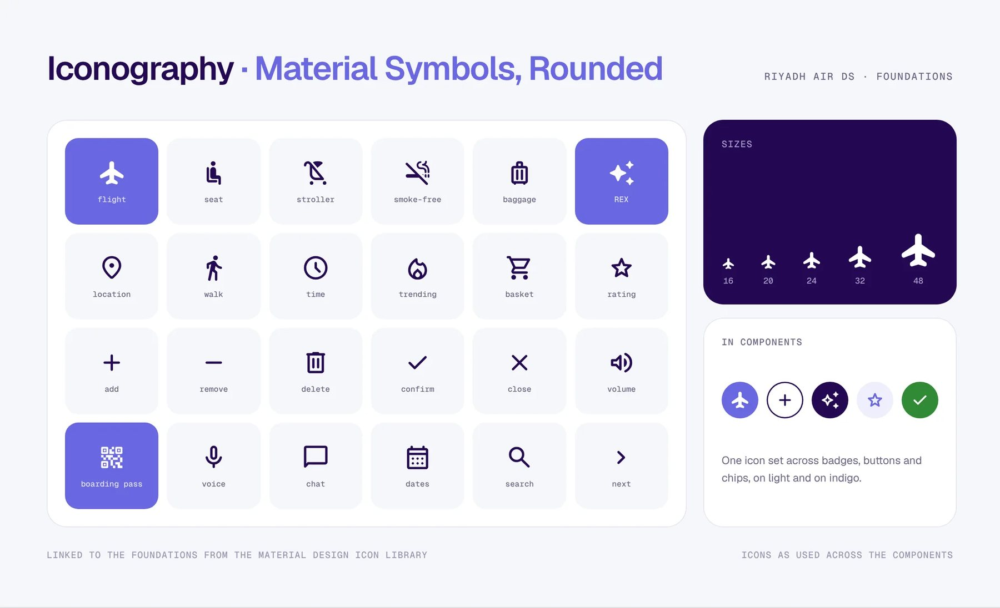
Iconography: one set, everywhere
Linked to Material Symbols rather than drawn from scratch. Seats, baggage, a smoke-free cabin and a boarding pass were already there.
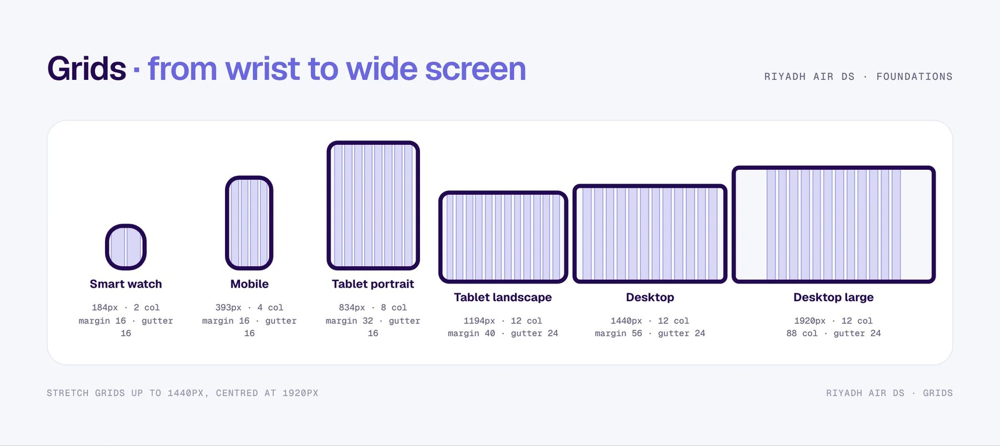
Grids: six breakpoints, wrist to wide screen
From a 184px smartwatch with two columns to a centred 1920px desktop with twelve. A boarding pass on a watch shaped every larger layout.
Read the detail
The boards above are redrawn from the library's own Styles page. The originals for typography, increments, effects and grids are in the gallery at the end.
A library anyone could find their way around
With many designers joining at once, the library had to explain itself. It runs from the smallest piece to the largest, every family and block is numbered, and one vocabulary covers every variant.
Styles
colour · type · gridPlus Material icons and Apple's iOS kit.
Base elements
G03/B01 Main ButtonThe smallest pieces: a button, a badge, an input.
Components
search · date selectorTwo or more atoms with a job.
Patterns → templates
top bar · booking moduleWhole sections, then whole pages.
Read the detail
Every variant property came from one shared list, so a "Hover" state or a "Glass" fill meant the same thing in every component, and developers could map them straight to code.
Families run G01 to G13, blocks B01 onwards. Anyone could point at a component by its number, in Figma, in a ticket or in a review.
Built, structured, and tested in four languages
A component wasn't ready when it looked right in English. It had to pass three checks, and the test step did the most work.
- Looks right in EnglishWorks in English and Arabic, both directions
- One scriptJapanese as a third script for main components
- Short labelsGerman for long words and phrases
- Short pricesLong-number currencies: rupees, rupiah, yen, dinars
- Checked on its ownChecked inside a complete layout
Toggle to see what "done" meant before and after the definition.
Build
The fewest frames and auto-layouts possible. Every text on a style, every colour on a variable.
Structure
Follows the naming convention, contains every useful variant, placed on its page with a description.
Test
English and Arabic, light and dark, long words and long numbers, inside a real layout.
71 components, each in four versions
Each component was drawn in light and dark, in English and Arabic, before it was called done. Read the families and you can read the product: chat and live voice for an assistant, nudges and FOMO badges for selling, a seat selector and a QR code for the trip itself.
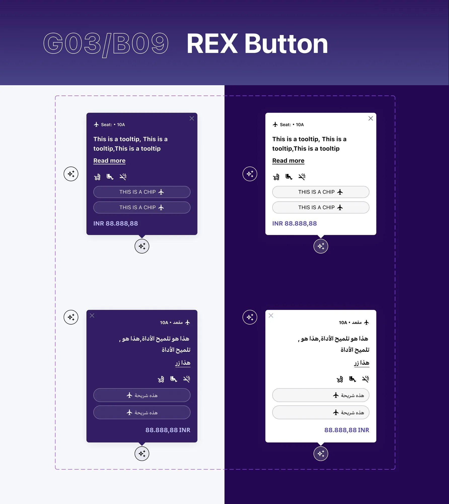
REX button · G03/B09
The AI assist button, opening a tooltip card with seat, amenities and price, in English and Arabic, light and indigo.
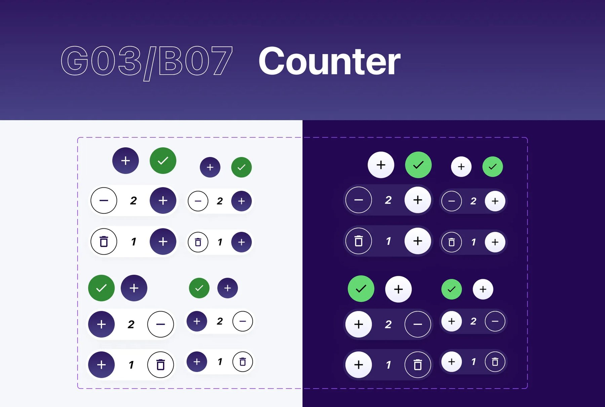
Counter · G03/B07
Add, confirm, increase, decrease and delete, in two sizes, mirrored for right to left.
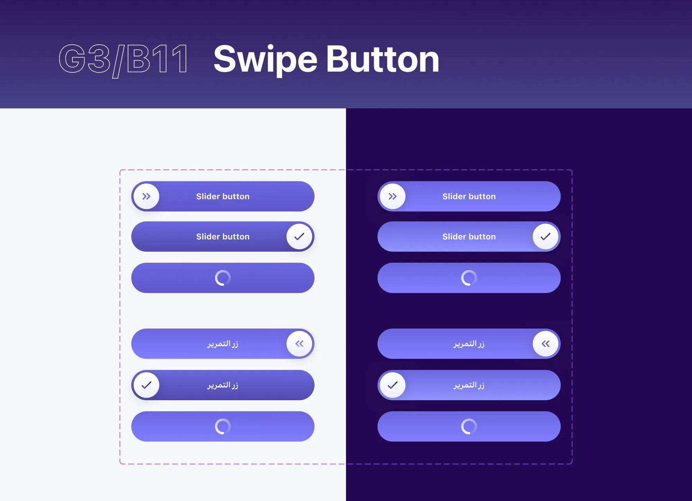
Swipe button · G03/B11
Idle, confirmed and loading, in English and Arabic.
Avatar · G01/B01
Initials, photo, placeholder and aircraft avatars in five sizes, with four statuses.
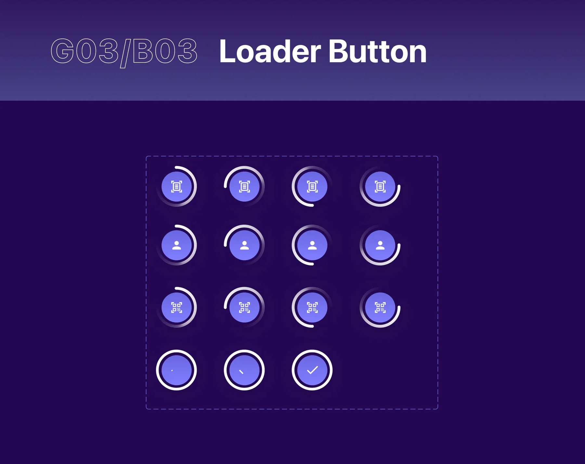
Loader button · G03/B03
Circular buttons that fill as they load, then confirm.
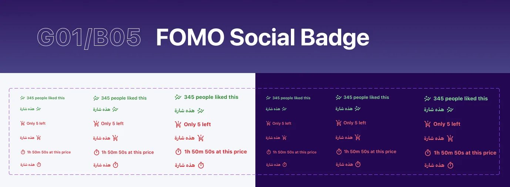
FOMO badge · G01/B05
Social proof for selling: people who liked it, seats left, time left at this price.
Three companies, one library
The system sat between three organisations and many teams. It worked because the path from an idea to a component in code was the same every time.
Bilingual from day one
Arabic wasn't a translation pass at the end. Every component shipped with its right-to-left version.
A shared definition of done
Build, structure and test, checked the same way for every component, whoever made it.
Design and code in step
Variant names matched the props engineers built, so handoff was a lookup, not a translation.
Platform kits attached
Material icons and Apple's iOS kit linked to the foundations.
The operating model behind this is its own case study: who decides what ships.
What we'd take to the next system
Prove it small, design the second language first, and start at the smallest screen.
Prove it small
A pilot on real work persuaded people faster than any deck could.
Design the second language first
Arabic and long German words broke layouts English never would.
Name things before you need them
A shared list of states, sizes and fills let three companies talk about the same component.
Start at the smallest screen
Designing for a 184px watch made every larger layout simpler.
From the files
Select any image to see it full size.
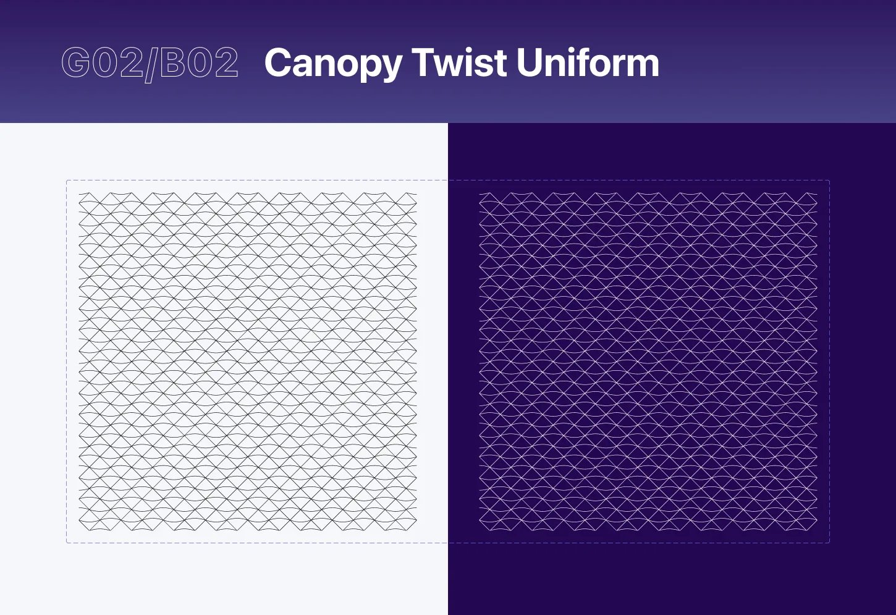

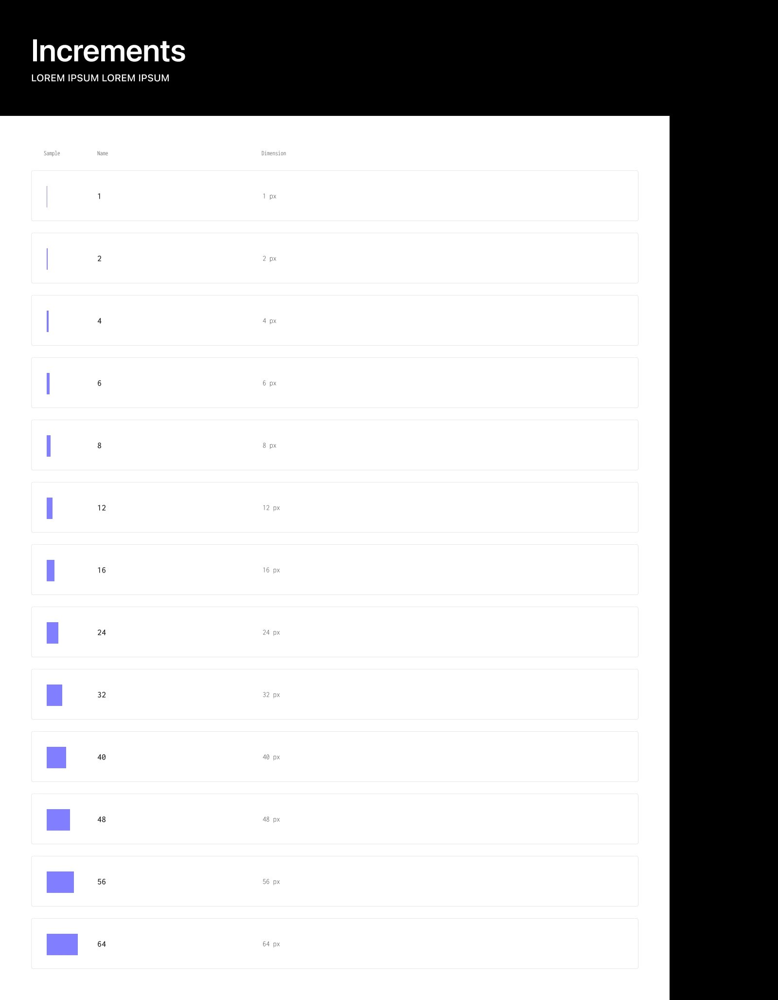
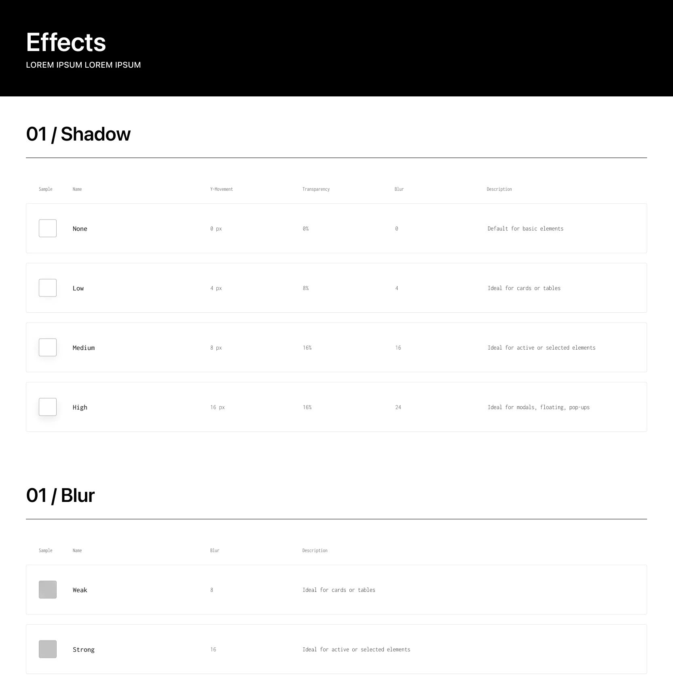

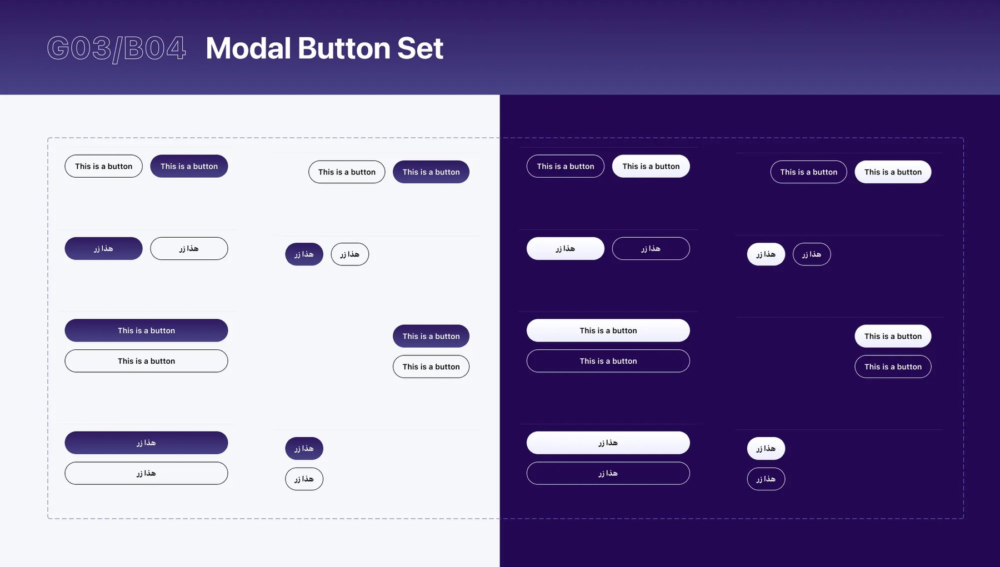
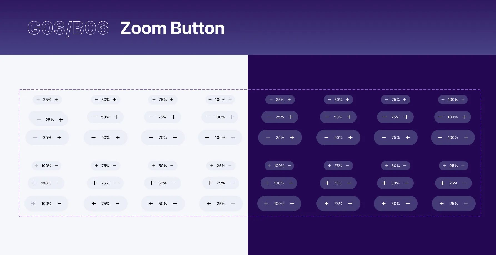
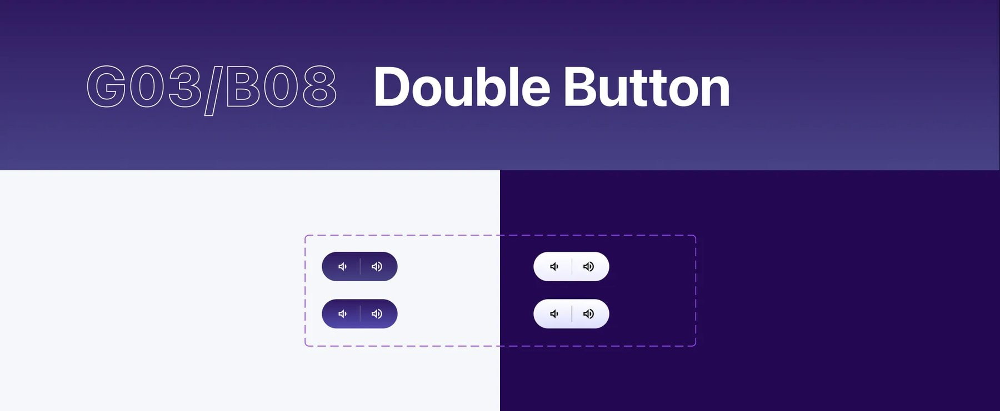

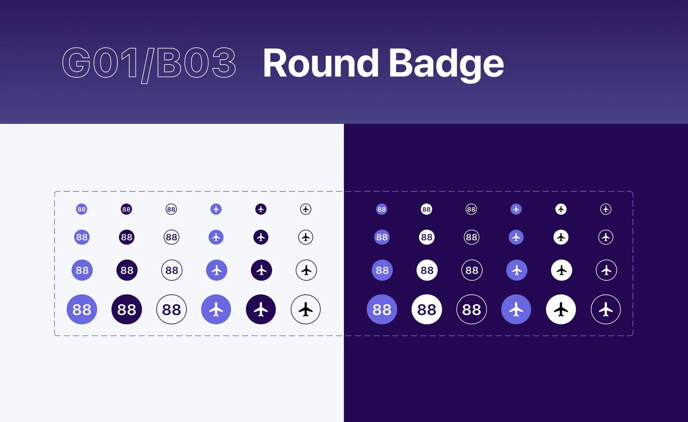
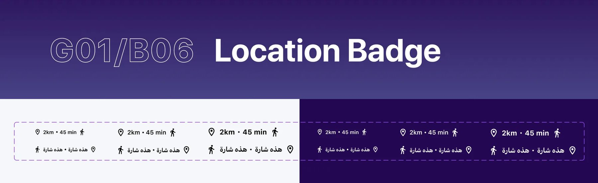
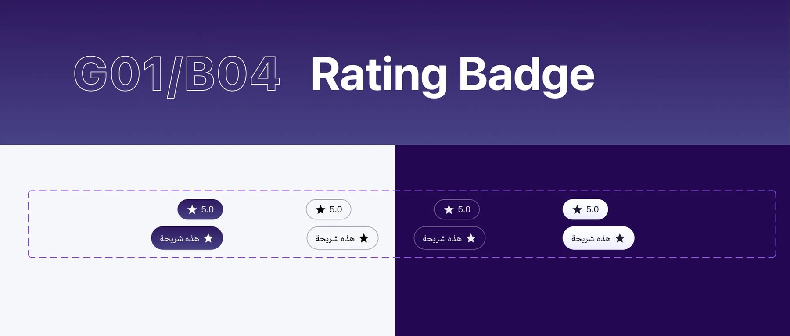
Aniket Pandey worked on this as a design system designer at IBM, alongside the IBM design team, IBM engineering, Publicis Sapient and Riyadh Air's product, design and engineering teams. This is IBM client work done as an employee, not Layer One client work. Images belong to Riyadh Air and IBM and are shown for portfolio purposes.
Need this for your product?
We do this work for product teams now. Start with a two-week audit.